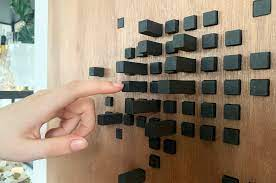

Week 1
Short Bio
Audrey Coulombe completed a technique in Fashion Design in 2018 and is now enrolled in a specialization in Computation Arts at Concordia. She has been collaborating with Vestechpro since 2017 and currently holds the position of Project Manager - Technology. She has also been involved in numerous research projects related to smart clothing, adaptive clothing, and medical clothing. While her professional practice involves exploring different techniques at the intersection of clothing and digital technologies, her artistic practice focuses on the intimate relationship between the human body and clothing, and how the use digital technologies can affect this relationship.
Week 2
Question
Answer
Week 5
Exploration of five queries
//------------- Query 1:Get the document with the highest value for VeryActiveMinutes ----------
//To convert the string value to a decimal one and update the database with the new value. Only has to be done once, then database is changed for good
//let veryActiveMinToNumber = await fitBitModel.updateMany({}, [{$set:{"VeryActiveMinutes":{$toDouble:"$VeryActiveMinutes"}}}], {multi:true});
// Sort all "VeryActiveMinutes" in descending order and pick the first value (the highest one)
fitBitModel.find({}).sort({ VeryActiveMinutes: -1 }).limit(1).then((result)=>{
console.log(result);
});
//------------- Query 2: Log average value for VeryActiveMinutes ----------
// Count the total number of documents. Note: await is needed to add a delay, or else it will look for it too quickly and won't find it. Note 2: await has to be in an async function!
let docCount = await fitBitModel.countDocuments({});
// Get all the values for the key "VeryActiveMinutes"
fitBitModel.find({},'VeryActiveMinutes').then((result)=>{
// Add up all the values of "VeryActiveMinutes"
let totalVeryActiveMinutes = 0;
for (let i=0; i
}
// Divide the added values for "VeryActiveMinutes" by the number of documents to get the average VeryActiveMinutes
let averageVeryActiveMinutes = totalVeryActiveMinutes/docCount;
console.log(averageVeryActiveMinutes);
});
//------------- Query 3: get the Id of "healty" people (who made 10000 steps or more and who made 20 minutes of activity or more)----------
// Two lines below: To convert the string value to a decimal one and update the database with the new value. Only has to be done once, then database is changed for good
//let veryActiveMinToNumber = await fitBitModel.updateMany({/*Filter documents.Keep empty for all documents*/},[{$set: { "VeryActiveMinutes": { $toDouble: "$VeryActiveMinutes" } } }], { multi: true });
//let totalStepsToNumber = await fitBitModel.updateMany({/*Filter documents.Keep empty for all documents*/}, [{ $set: { "TotalSteps": { $toDouble: "$TotalSteps" } } }], { multi: true });
// Get the Id of all people that made 10000 steps or more and who were very active 20 minutes or more in a day
fitBitModel.find({TotalSteps:{$gte: 10000}, VeryActiveMinutes:{$gte: 20}}, 'Id').then((result)=>{
console.log(result);
});
//------------- Query 4: get a list or number of distinct Ids ----------
// Find all distinct Ids
fitBitModel.find({}, 'Id').distinct("Id", function(error, results){
// console.log(results); // Display a list of distinct Ids in the console
console.log(results.length); // Display the number of distinct Ids in the console
});
// ------------- Query 5: "make this query return detailed execution stats instead of the actual query result"----------
const result = fitBitModel.findOne({}, 'Id').explain('TotalSteps');
console.log(result);
Week 6
Research and discuss at least one other work which could be classified as an "Experiential Data Visualization" and compare and contrast critically with the project described in Sepandar D. Kamvar and Jonathan Harris, We Feel Fine and Searching the Emotional Web.
The project titled Laina: Dynamic Data Physicalization for Slow Exercising is an artwork that slowly changes shape according to how you exercise. It takes the form of an A1 wooden panel with rectangular black pins that slowly emerge from the panel. Everytime a person exercises, it takes up to two days for the pins to reach to their final position. This slow feedback emphasizes the person's overall exercise level rather than their performance for each workout.
Just like We Feel Fine, Laina is also a kind of “Experiential Data Visualization” in that it offers immersive interaction with data and its goal is also to move away from traditional ways of collecting and presenting data. In addition, both Laina and We Feel Fine aim to help people better understand themselves.
However, while it can be interesting to see the artwork changing over time, Laina fails at communicating data in a meaningful way. Indeed, people who tried it reported they didn't understand/know which data affected which parameter: is it the distance of their run, the intensity, the time? Not very useful to gain a better understanding of your overall exercise behaviour. However, the project still achieved its goal to motivate users as they were curious and tempted to change their exercise habits to see how it affects the pins. Apparently, seeing the pins change without knowing what it meant was a reward in itself. As for We Feel Fine, by proposing various ways to visualize data and by explaining the parameters of the visualization, it communicates data in a much more effective way. Moreover, We Feel Fine also achieved its goal by increasing “emotional self-awareness” and the “sense of connection to others”.
In both of these projects, as with any data-driven project, the same problem arises: taking data without context and analyzing it can yield erroneous or biased results. Nevertheless, I found the "Montage" visualization in I Feel Fine, where you can see a picture of the person, the sentence posted, the date it was posted, the age of the person, and the location of the person, was a good way to provide some level of context around the data, which was not possible with Laina.

Laina: Dynamic Data Physicalization for Slow Exercising Feedback
Source: https://dl.acm.org/doi/fullHtml/10.1145/3461778.3462041
Week 7
Question
Answer
Week 8
Question
Answer
Week 9
Research one of Refik Anadol's works and write a short reflection on one
Machine Hallucinations
By Refik Anadol
The fluidity and scale of this work is very impressive. Each "pixel" in the work is actually an image of nature that is animated based on fluid dynamics. Although the work is hypnotic at first glance, I can't help but wonder why this choice was made to represent the beauty of nature.
Indeed, I feel that the images and the AI were not used to their full potential. The images are so small that you can't see the details, and from my analysis, the AI is probably just sorting the images by color, then animating them with pre-set, déjà vu fluid dynamics. There are so many reasons why nature is beautiful besides its colors. Its shapes, textures, diversity, etc. could also be considered. With this data set and a powerful AI, I would be more interested in analyzing the patterns in nature that make it so beautiful. For example, we know that the golden ratio is common in natural elements. Perhaps AI could help us find other interesting ratios and create an abstract nature from them?
Week 10
Question
Answer